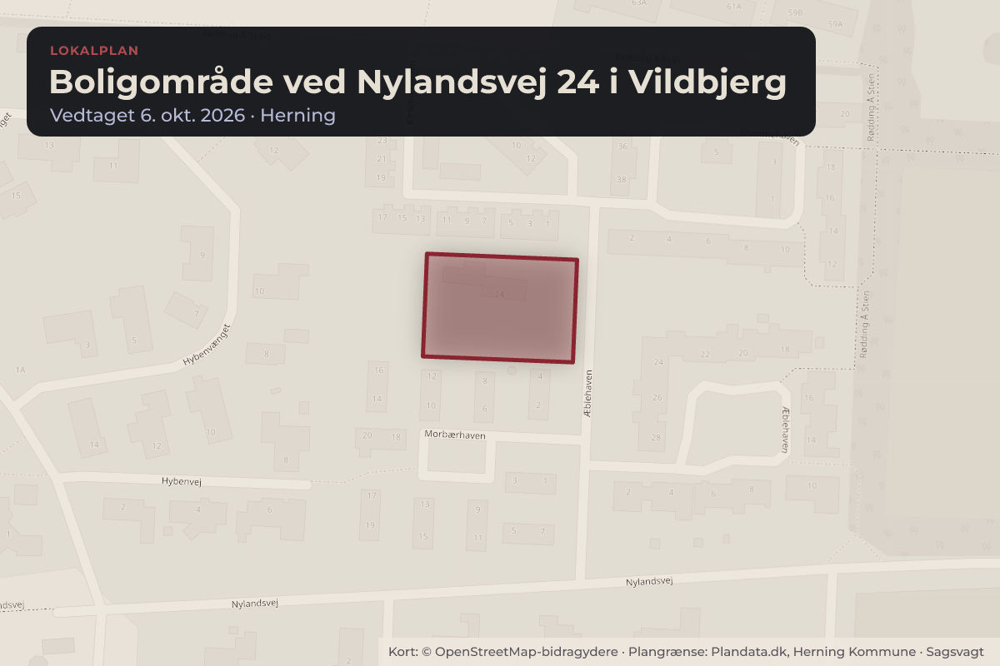
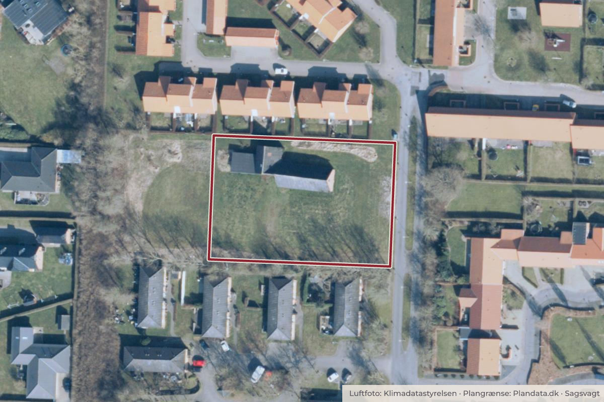

Besluttet 6. oktober, Herning Byråd, Herning
Endelig vedtagelse af lokalplan for boligområde ved Nylandsvej 24, Vildbjerg

Kort: © OpenStreetMap-bidragydere. Plangrænse: Plandata.dk, Herning Kommune.

Kort fortalt
- Hvem
- Herning Byråd, Herning Kommune
- Hvornår
- Tirsdag 6. oktober 2026
- Status
- Besluttet. 1 er med den anførte ændring endeligt vedtaget.
Er noget forkert her? Skriv til os
Læs hele sagen Kommunens egen tekst
Sagsfremstilling
Lokalplanens baggrund
Lokalplanen udarbejdes på baggrund af en ansøgning om mulighed for at etablere
boligbebyggelse på Nylandsvej 24 i Vildbjerg.
Lokalplanområdet
Området er beliggende i Vildbjerg på Nylandsvej 24 og omfatter matrikel nr. 1c, Burgård,
Vildbjerg, med et areal på 2.460 m².
Lokalplanområdet afgrænses mod nord af tæt-lav boligbebyggelse ved Kirsebærhaven, mod
øst af stamvejen Nylandsvej, mod syd af et læhegn med bagvedliggende tæt-lav bebyggelse
ved Morbærhaven, og mod vest af et grønt areal udpeget som Bynatur.
Luftfoto med lokalplanområdets afgrænsning markeret med hvide prikker
Lokalplanforslaget
Lokalplanens formål er at muliggøre etablering af et nyt boligområde ved Nylandsvej 24 i
Vildbjerg med enten tæt-lav bebyggelse eller åben-lav bebyggelse på små grunde.
Lokalplanen skal sikre, at den nye bebyggelse indpasses i nærområdet og fremstår som en
naturlig del af det eksisterende bymiljø. Lokalplanen skal ligeledes muliggøre etablering af en
stiforbindelse gennem området, som skal sikre fortsat adgang til det grønne areal mod vest.
For at sikre sammenhæng med det eksisterende bymiljø og områdets karakter fastsætter
lokalplanen krav til bebyggelsens omfang, udformning og arkitektoniske udtryk.
Lokalplanforslaget giver mulighed for udstykning af enten én storparcel eller af
enkeltgrunde. Ved udstykning af enkeltgrunde må grunde til tæt-lav bebyggelse ikke være
mindre end 400 m² og grunde til åben-lav bebyggelse må ikke være mindre end 400 m² eller
større end 600 m².
Den maksimale bebyggelsesprocent for den enkelte ejendom fastsættes til 40% for både tætlav og åben-lav bebyggelse. For at sikre, at åben-lav boliger indpasses i området og ikke
fremstår dominerende, fastsættes et yderligere krav om, at åben-lav boliger maksimalt må
opføres med et fodaftryk på 180 m².
I forhold til det arkitektoniske udtryk stiller lokalplanen krav om, at facader skal fremstå i tegl i
rødlige nuancer, da dette materialevalg er karakteristisk for området. Derudover skal tage
udformes i tagformer, der er typiske for nærområdet, herunder ligesidet saddeltag, forskudt
saddeltag eller ensidig taghældning.
Bebyggelsen må maksimalt opføres i to etager og med en maksimal bygningshøjde på 8,5
meter. Dette vurderes at sikre en skala, der harmonerer med de boliger som er beliggende
nord for området.
Lokalplanen stiller krav om etablering af en stiforbindelse til det grønne område vest for
lokalplanområdet. Stiforbindelsen skal sikre lokal adgang for nærområdets beboere samt
driftsmæssig adgang til området, så vedligeholdelse fortsat kan finde sted. Stien skal derfor
fremstå tydelig og have gode oversigtsforhold. Lokalplanen fastlægger på den baggrund stiens
placering langs lokalplanområdets nordlige grænse.
Langs lokalplanområdets sydlige grænse findes et eksisterende læhegn, som udgør en grøn
afgrænsning mod naboområdet samt en naturlig ledelinje i landskabet. Lokalplanen fastsætter
bestemmelser om, at der ikke må opføres bebyggelse eller anlæg inden for træernes
drypzone, for at bevare beplantningen, så den fortsat kan indgå som et grønt element mellem
boligområderne.
Gældende plangrundlag
Området for lokalplanforslaget er på nuværende tidspunkt omfattet af lokalplan nr. 50 for
boligområde ved Blommehaven i Vildbjerg, hvor området indgår som lokalplanens delområde
Ia. Ved lokalplanforslagets endelige vedtagelse og offentliggørelse aflyses delområde Ia i
lokalplan nr. 50.
Offentlig høring
Lokalplanforslaget har været i offentlig høring fra den 28. maj 2026 til den 25. juni 2026, begge
dage inklusivt. Der er i høringsperioden indkommet en indsigelse fra Æblehavens
Grundejerforening. Indsigelsen er vedlagt som bilag til dagsordenen.
Neden for er der gengivet et resumé af Indsigelsen efterfulgt af forvaltningens bemærkninger
og forvaltningens vurdering.
Høringssvar af den 11. juni 2026 fra Æblehavens Grundejerforening
Æblehavens Grundejerforening finder det uhensigtsmæssigt, at stamvejen til Æblehaven,
Blommehaven, Kirsebærhaven, Morbærhaven og det kommende boligområde ved Nylandsvej
24 i korttjenester og lokalplanforslaget er navngivet Æblehaven. Grundejerforeningen anfører,
at vejnavnet skaber forvirring, da både stamvejen og boligvejen Æblehaven har samme navn,
hvilket blandt andet medfører fejlkørsel. Grundejerforeningen henviser desuden til, at vejen i
lokalplan 84 benævnes Nylandsvej, og foreslår derfor, at stamvejen i lokalplanforslaget bør
benævnes Nylandsvej frem for Æblehaven. Derudover foreslås det, at vejnavnet rettes hos den
relevante vejnavnmyndighed.
Forvaltningens bemærkninger
Forvaltningen har undersøgt vejnavnet for stamvejen og verificeret, at vejens officielle navn er
Nylandsvej. Vejnavnet er desuden meldt ind til den relevante vejnavnmyndighed med henblik
på opdatering i korttjenester.
Forvaltningens vurdering
Forvaltningen vurderer, at indsigelsen giver anledning til ændringer i lokalplanen, således at
stamvejen i lokalplanen benævnes Nylandsvej frem for Æblehaven. Ændringen bringer
lokalplanen i overensstemmelse med vejens officielle navn.
Indstilling
BYPLAN- OG BOSÆTNINGSUDVALGET INDSTILLER,
at Lokalplan 81.B7.1 for boligområde ved Nylandsvej 24 i Vildbjerg endelig vedtages med
den ændring, at benævnelsen af stamvejen ændres fra Æblehaven til Nylandsvej og
boliger i lokalplanen dermed får adresse på Nylandsvej.
Økonomi-, Erhvervs- og Uddannelsesudvalget anbefaler sagen til Byrådet.
Beslutning
Lokalplan nr. 81.B7.1 er med den anførte ændring endeligt vedtaget.
Kilde: Herning Kommune, Herning Byråd, referat fra mødet tirsdag 6. oktober 2026, punkt 8. Læs den originale sag hos kommunen.
Bydele i sagen: Vildbjerg
Steder i sagen: Nylandsvej